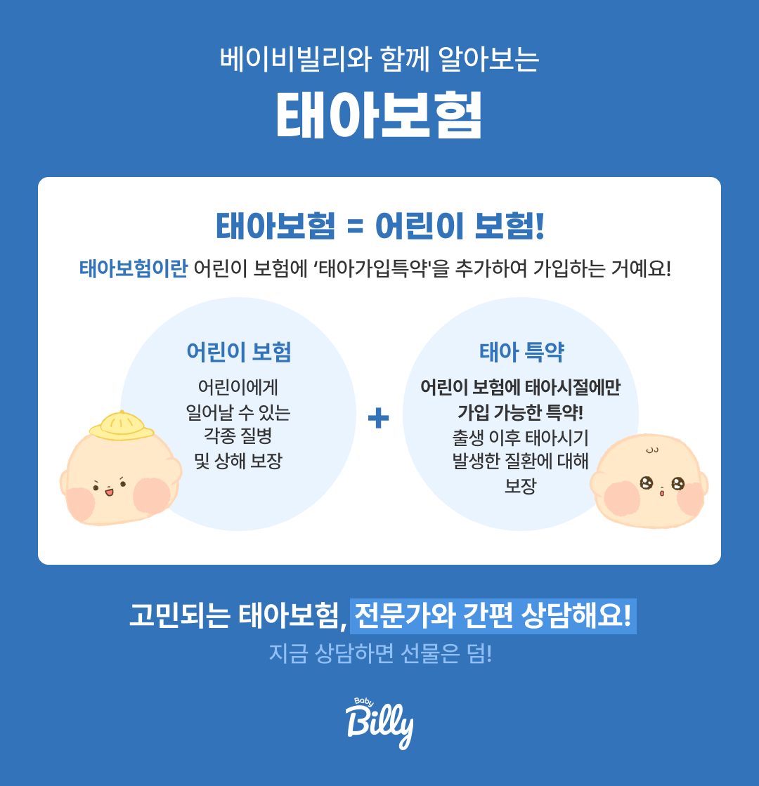

태아실손보험 vs 일반실손,
아무도 제대로 안 알려준
핵심 차이
선천이상 담보, 5세대 실손, 중복 가입 함정까지. 태아보험에서 실손을 어떻게 설계해야 하는지 베이비빌리 태아보험 전문가가 솔직하게 정리했어요.

"태아실손과 일반실손, 뭐가 달라요?"
가장 큰 차이는 선천이상 담보 여부예요. 일반 실손보험은 선천이상(Q코드) 질환을 보장하지 않지만, 태아보험에 부착된 실손 특약은 선천이상 입원·수술비도 보장할 수 있어요(손해보험 22주 이내 가입 시). 또한 태아 시절에 가입하기 때문에 출생 직후 발견되는 질환도 소급 적용이 가능하다는 점이 핵심이에요.[1]
실손보험이 뭔가요?
한 줄로 정리해 드려요
실손보험은 병원에서 실제로 낸 돈의 일부를 돌려받는 보험이에요. 국민건강보험이 보장하지 않는 비급여 항목이나 본인부담금을 보전해 주는 역할을 해요.

💡 핵심 구조: 건강보험 본인부담금 + 비급여 의료비의 일부를 실손보험이 돌려줘요. 태아보험 안에 '실손 특약'으로 포함시킬 수도 있고, 별도 단독 실손으로 가입할 수도 있어요.
중요한 건 실손보험은 실제 지출한 의료비만큼만 보상한다는 점이에요. 두 개를 가입해도 의료비를 두 배로 받을 수 없어요. 이 부분은 뒤에서 더 자세히 설명할게요.
왜 누구는 "실손이 포함됐다", 누구는 "따로 들었다"고 할까?
2018년 4월 표준약관 개정 때문이에요. 이 시기 이전에는 어린이종합보험(태아보험) 안에 실손이 함께 패키지로 들어 있었지만, 2018년 4월 1일부터 실손과 종합보험이 분리되면서 별도로 가입하는 구조로 바뀌었어요.[2] 그래서 2017년 가입한 부모와 2021년 이후 가입한 부모가 서로 다른 답을 하는 거죠.
또 한 가지 중요한 사실은, 2026년 현재 대부분 손해보험사가 자녀 단독실손 인수를 중단하는 추세라서 어린이보험(태아보험)에 실손 특약을 묶어서 가입하는 것이 표준이 되었어요. 보험사별 차이가 궁금하다면 보험사 비교 가이드를 참고하세요.
태아실손 vs 일반실손
이것만 알면 돼요
| 구분 | 태아실손 (태아보험 특약) | 일반실손 (별도 가입) |
|---|---|---|
| 가입 시점 | 임신 중 (출생 전) | 출생 후 가입 |
| 선천이상 담보 | ✅ 가능 (조건 충족 시) | ❌ 불가 |
| 출생 시 질환 소급 | ✅ 가능 | ❌ 불가 |
| 신생아 특약 포함 | ✅ 가능 | 별도 가입 필요 |
| 현재 적용 세대 | 5세대 실손 | 5세대 실손 |
| 월 보험료 | 약 1~2만원대 (어린이 기준) | 연령·성별에 따라 1~6만원대 |
| 중복 지급 여부 | ❌ 불가 (비례보상) | |
✅ 결론: 태아보험에 실손을 포함시키면 일반 실손보험에서는 절대 받을 수 없는 선천이상 보장이 가능해요. 이것이 태아보험 실손의 가장 큰 존재 이유예요. 베이비빌리 베동 커뮤니티와 실제 전문가 상담에서는 이 담보 여부를 가장 먼저 확인하라고 강조해요. 가입은 카톡으로만도 가능해요! 🍀
※ 현대해상·메리츠·KB손보 4세대 어린이실손 평균. 2026.05 기준.[3]
선천이상 담보,
내 아이 보험에 포함돼 있나요?
태아보험 실손 구성을 베이비빌리 태아보험 전문가가 무료로 확인해 드려요
💬 무료 실손 구성 확인하기선천이상 담보,
왜 이게 핵심인가요?
선천이상(Q코드)은 태아 발달 과정에서 형성된 신체 구조적 이상이에요. 심장 기형, 구개파열, 다운증후군 등이 포함돼요. 이런 질환은 출생 시 발견되는 경우가 많고, 수술·입원 비용이 매우 클 수 있어요.

| 가입 주수 | 선천이상 담보 여부 | 비고 |
|---|---|---|
| ~16주 (생명보험) | ✅ 가능 | 생명보험 기준 |
| ~22주 (손해보험) | ✅ 가능 | 손해보험 — 더 넓은 범위 |
| 22~28주 | ⚠️ 제한 | 보험사마다 다름 |
| 28주 이후 | ❌ 불가 | 대부분 가입 거절 |
| 출생 후 (일반 실손) | ❌ 불가 | 선천이상은 면책 조항 |
⚠️ 꼭 알아두세요: 출생 후에 선천이상이 발견되더라도, 태아보험 없이 출생 후에 가입한 일반 실손이나 어린이보험으로는 보장받을 수 없어요. 태아보험을 임신 중에 가입하고 선천이상 담보를 포함시켜야만 해요.
실제 청구 사례 #1 — 인큐베이터 73일 입원
제왕절개로 태어난 신생아 NICU 73일 — 태아보험으로 큰 부담 면해
제왕절개로 태어난 신생아 A는 호흡곤란·혈관종으로 출생 직후 인큐베이터에 들어가 74일 중 73일을 신생아 중환자실에 입원했어요. 임신 12주에 가입한 태아보험과 어린이실손 덕분에 입원비·치료비·신생아 입원일당 모두 보장받아 가정 경제 충격을 면했어요.
실손보험 1~5세대,
뭐가 다른가요?
실손보험은 시대에 따라 보장 구조가 계속 바뀌었어요. 지금 태아보험에서 선택할 수 있는 건 5세대 실손뿐이에요.
100% 보장형
- 비급여 거의 전액 보장
- 자기부담금 없음
80~90% 보장형
- 급여 10%, 비급여 20% 자기부담
- 3년 단위 갱신
급·비급여 분리형
- 급여/비급여 계약 분리
- 도수치료 등 한도 제한
지금 가입 가능
- 청구 많으면 보험료 할증
- 청구 없으면 보험료 할인
- 입원 20%, 외래 20~30% 자기부담
💡 아이에게 유리한 이유: 아이는 성인보다 비급여 치료를 반복적으로 받을 가능성이 낮아요. 5세대 실손의 할증 리스크가 상대적으로 낮고, 초기 보험료도 저렴해서 어린이에게 유리해요.
임신 중에 산모도
실손에 가입할 수 있을까?
다른 비교 사이트는 자녀 태아보험 위주로 다루고, "임산부 본인의 실손" 부분은 거의 다루지 않아요. 베이비빌리 베동 커뮤니티와 실제 전문가 상담에서는 산모 실손 가입 가능 여부와 주의사항을 묻는 분이 가장 많습니다.
임산부도 실손에 새로 가입할 수 있어요 — 단 주의사항이 있어요
가입 자체는 가능합니다. 다만 보험사마다 인수 기준이 다르고, 임신 중 발견된 질병·이상 소견이 있으면 다음 같은 결과가 나올 수 있어요.
- ✅ 정상 가입 — 임신 사실 외 특이사항이 없으면 일반 실손과 동일하게 가입.
- ⚠️ 부담보 가입 — 임신성 당뇨·임신중독증·고혈압 등 진단 시 해당 질환은 1~5년 또는 영구 보장 제외.
- ❌ 가입 거절 — 다태아·고위험 임신·반복 유산 이력 등에서 거절될 수 있음. 보험사를 바꾸면 가능한 경우도 많음.
⚠️ 가장 중요한 주의사항: 실손 표준약관상 임신·출산·산후기 관련 비용은 보장 제외입니다. 제왕절개·자연분만·임신 중 정기검진비는 일반 실손으로 받을 수 없어요. 대신 손해보험 태아보험에 '산모실손특약'을 추가하면 임신중독증·자궁경관 봉합수술 등 일부가 보장됩니다.
실제 청구 사례 #2 — 자궁경관 봉합수술
임신 26주차 자궁경관 봉합수술 — 산모실손특약으로 충당
산모 B씨는 임신 26주차에 자궁경부 이상으로 조산 위험이 있어 자궁경관 봉합수술을 받았어요. 임신·출산 관련 비용은 일반 실손에서 보장되지 않지만, 임신 12주에 가입했던 태아보험의 산모실손보장특약으로 병원비를 보장받았습니다.
💡 결혼·임신 계획 단계의 팁: 결혼이나 임신 계획이 있다면 임신 사실 확인 전에 실손 가입을 마쳐 두는 것이 가장 깔끔해요. 실손은 평생 가져가는 보험이라 빨리 가입할수록 보험료·보장 측면에서 유리합니다.
태아보험 안에 실손,
어떻게 넣으면 되나요?
방법은 간단해요. 태아보험(어린이보험) 주계약에 '실손의료비 특약'을 추가하면 돼요. 아래 4단계로 확인해 보세요.

실손 특약을 주계약에 추가
태아보험 주계약에 '실손의료비 특약'을 선택해 추가해요. 별도 실손 보험을 따로 가입하지 않아도 돼요.
선천이상 담보 특약 확인
22주 이내 가입 시 '선천이상 입원의료비', '선천이상 수술비' 특약을 반드시 포함시키세요. 이게 태아실손보험의 핵심이에요.
신생아 관련 특약 추가
저체중아, 미숙아, 신생아 집중치료실(NICU) 입원 관련 특약을 추가하면 출생 직후 예상치 못한 상황에 대비할 수 있어요.
중복 실손 여부 확인
배우자 직장 단체보험이나 기존 어린이보험에 이미 실손이 있다면 중복 가입은 피하세요. 보험료만 2배로 낼 수 있어요.
필수 특약과 빼도 되는 특약이 궁금하다면 별도 가이드를 참고하세요.
실손 중복 가입,
이렇게 하면 손해예요
실손보험을 두 개 가입해도 의료비를 두 배로 받을 수 없어요. 실제 지출한 의료비 안에서 비례보상하는 구조예요.
| 상황 | 실손 청구 결과 | 추천 여부 |
|---|---|---|
| 실손 1개 | 해당 실손에서 전액 청구 | ✅ 권장 |
| 실손 2개 | 양사가 비율대로 나눠 지급 (합계 = 의료비 이내) |
❌ 비효율 |
| 정액 특약 + 실손 1개 | 정액 지급 + 실손 청구 별도 | ✅ 추천 조합 |
이런 경우 중복 가입을 꼭 점검하세요
- 🔍 태아보험에 이미 실손이 포함됐다면 → 별도 어린이 실손 불필요
- 🔍 배우자 직장 단체보험에 자녀 실손이 있는 경우
- 🔍 조부모가 선물로 어린이보험 가입 시 → 실손 중복 여부 반드시 확인
- 🔍 부모 실손보험에 자녀 특약으로 추가된 경우
⚠️ 주의: 실손은 중복해서 가입해도 의료비를 더 많이 받을 수 없어요. 보험료만 2배로 내고 혜택은 그대로예요. 가입 전에 반드시 기존 실손 유무를 확인하세요.
태아실손 구성,
전문가와 함께 설계하세요
선천이상 담보부터 중복 가입 점검까지 한 번에 해결 · 카톡으로만도 가능 · 원하시면 전화 한 번으로도 OK
💬 태아실손 무료 구성 상담 받기